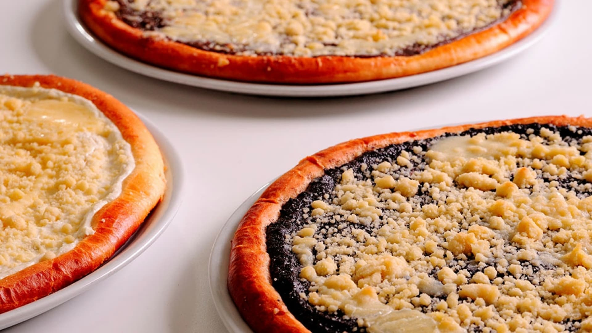

Frgál

Popis
Frgál je tradiční krajovou specialitou Valašska, která si získala oblibu po celé republice.
Zkuste si připravit výborné koláče s hruškami, tvarohem, povidly nebo mákem!
Ingredience
- hladká mouka 500 g
- žloutek 2 ks
- mléko 250 ml
- droždí 40 g
Postup
- Příprava těsta: Do menší misky dejte trošku mouky, cukru a droždí.
Zalijte malým množstvím ohřátého mléka a nechte vzejít kvásek.
Mezitím dejte do misky hladkou mouku, vejce, sůl, zbytek cukru,
citronovou kůru, Heru (o pokojové teplotě) a ohřáté mléko.
Vlijte kvásek a vypracujte vláčné těsto, které překryjte utěrkou a dejte na teplé místo vykynout.
- Po vykynutí těsto rozdělte na bochánky po 240 g a položte na kruhový pečicí papír o průměru 32 cm.
Bochánky rozválejte válečkem na kruhový tvar o průměru 30 cm.
- Dohotovení: Na každý koláč s 240 g těsta přidejte 400 g náplně (viz. níže). Stejnoměrně rozetřete po těstě,
pouze po obvodu nechte asi 1cm okraj těsta, který potírejte připraveným rozšlehaným vejcem.
Koláč posypejte drobenkou.
Takto připravený jej nechte ještě chvíli nakynout a pečte v rozehřáté troubě při cca 200 °C, až okraje těsta budou pečené dozlatova.
Home